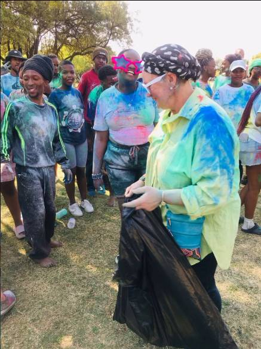

Programmes
Choose your way to take part.
Learn, volunteer, connect and contribute. ACCESS UFS offers two ways to get involved, plus a citizenship programme sign-up for 2027.
At a glance
Two participation pathways
| Programme | What students can do |
|---|---|
| Student Volunteerism Programme | Join community projects, workshops, events and awareness activities as a volunteer. |
| Action Learning Group | Work with others to understand community challenges and respond through participatory action learning. |
Programme 01
Student Volunteerism Programme
This programme gives students a way to contribute their time to ACCESS activities and community engagement. Examples of participation include:
- Practical community projects
- Awareness campaigns
- On-campus engagement
- Workshops and events
Who is it for? Students who want a practical and flexible way to contribute to projects, events and community activities.


Programme 02
Action Learning Group
The Action Learning Group lets students take part in action learning and community-based problem solving. Students can work through stages such as:
- Understanding the challenge
- Working with people and community partners
- Designing and testing responses
- Reflecting on what was learned
Why action learning? It connects doing, reflection and learning instead of separating knowledge from practice.
Getting started
Three simple steps
- Find out more. Read about ACCESS on the About page and see real examples on the Activities page.
- Choose a pathway. Decide whether you want to volunteer, join the Action Learning Group, or both.
- Stay connected. Sign up for the 2027 citizenship programme and join the WhatsApp group for updates.
Not sure where to start?
Send us a short enquiry and we will point you in the right direction.